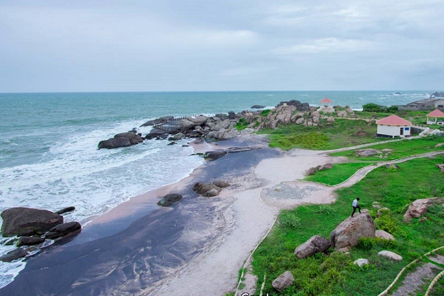
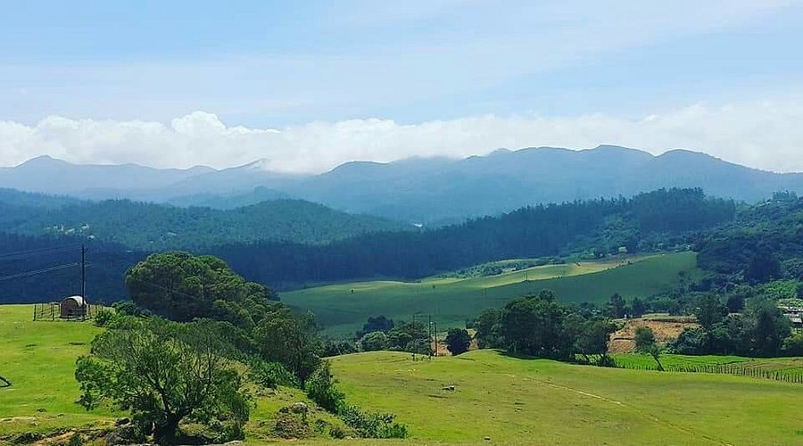
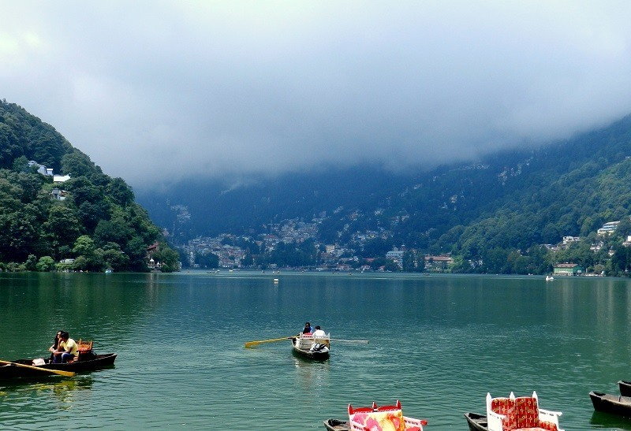
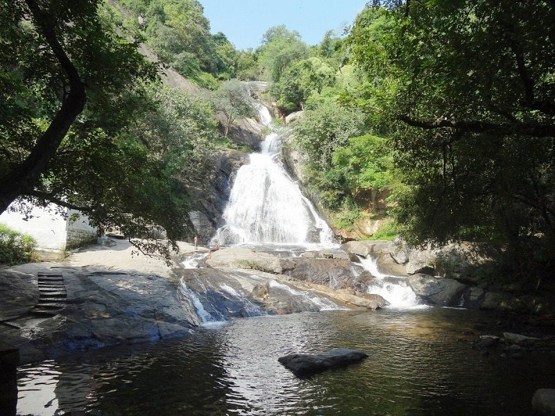
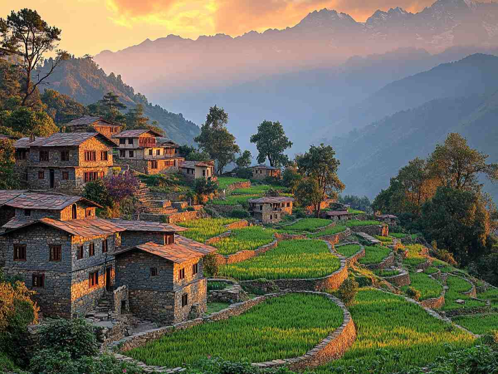
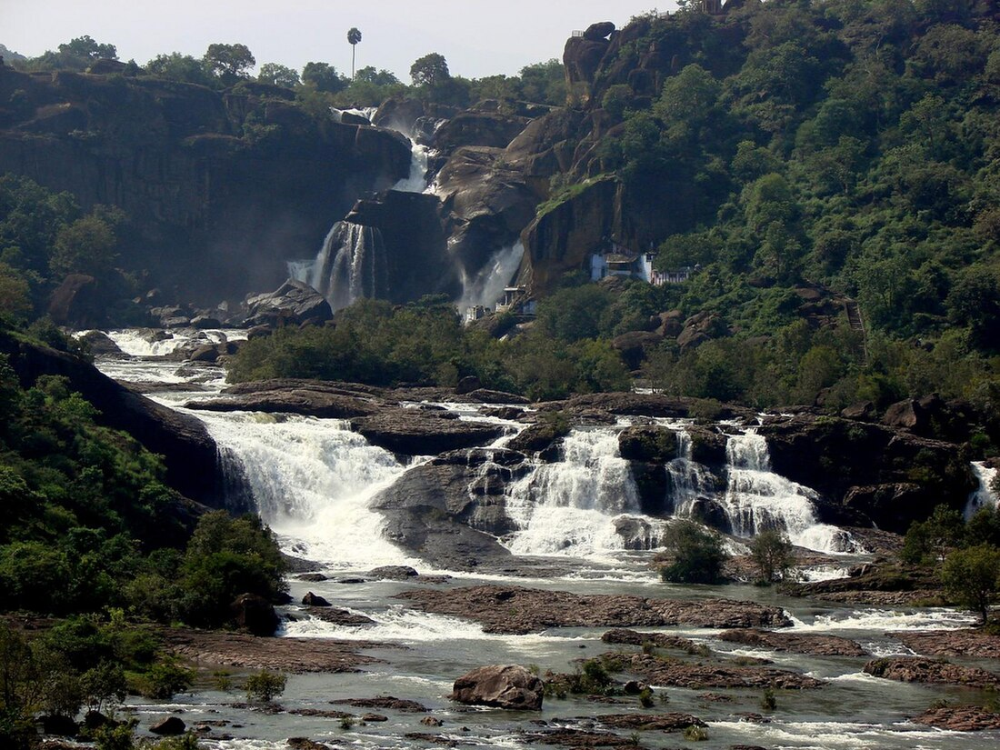
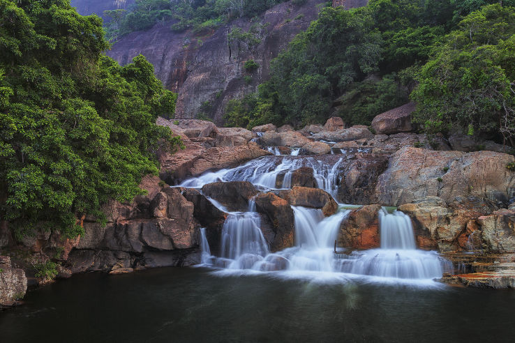
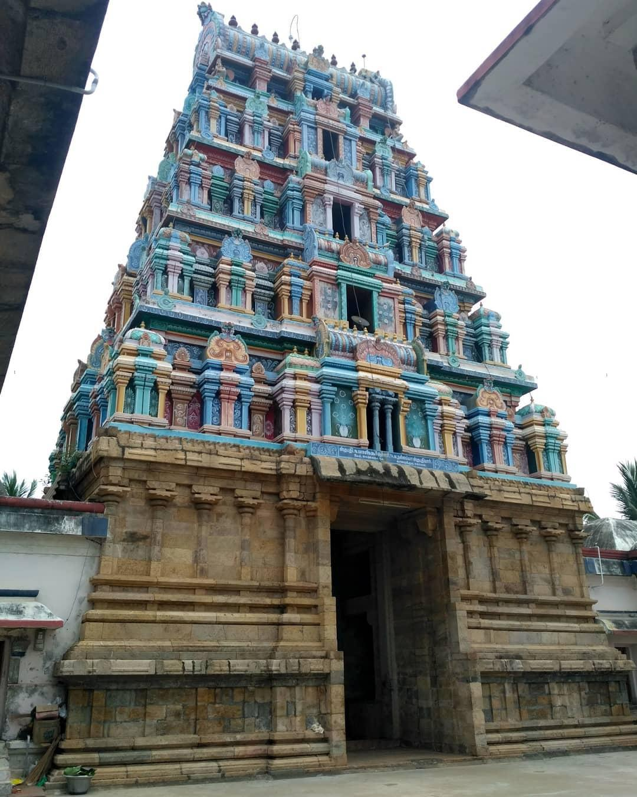
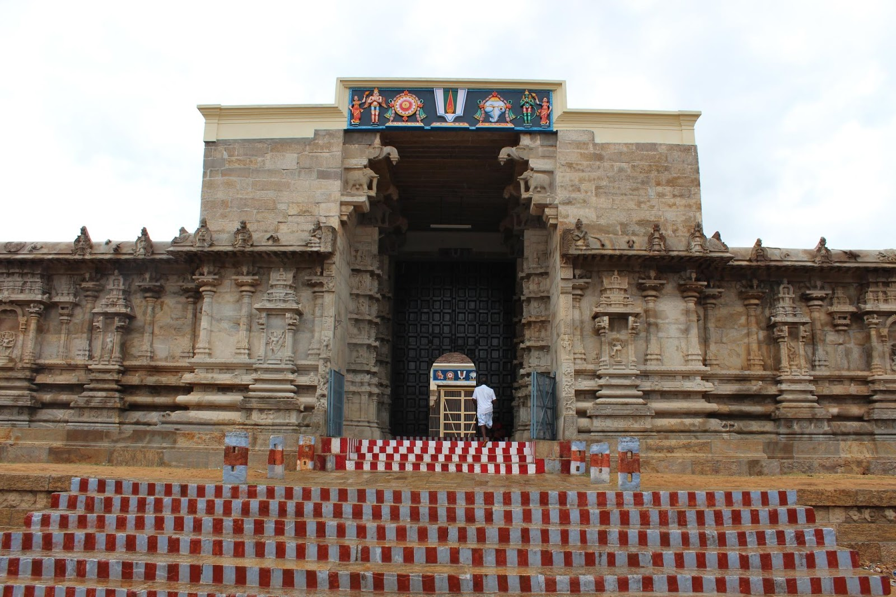
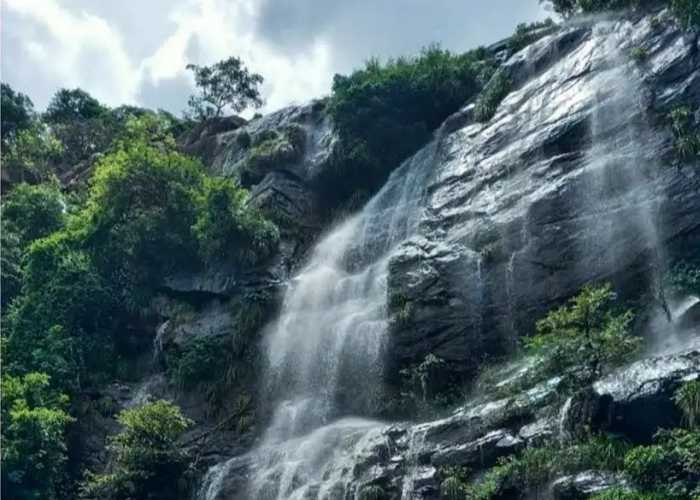

Muttom Beach, located in Kanyakumari district, Tamil Nadu, is a serene and less crowded
beach
known for its unique rocky
landscape, stunning sunsets, and a historic lighthouse.
It offers a tranquil escape with its clean
shoreline, powerful
waves, and picturesque views.
1. Rocky Shoreline:
Unlike typical sandy beaches, Muttom boasts a distinctive rocky shoreline with large rocks
protruding
from the sea,
creating a dramatic and beautiful landscape.
2. Less Crowded:
Compared to other popular beaches in the area, Muttom Beach is relatively less crowded,
making it an
ideal spot for
those seeking peace and tranquility.
3. Sunset Views:
The beach is famous for its breathtaking sunset views, often described as more spectacular
than
those at
Kanyakumari.
4. Lighthouse:
A historical lighthouse, constructed during the British colonial era, stands near the beach
and is a
significant
landmark.
5. Clean Beach:
Locals and visitors alike often praise Muttom Beach for its clean and well-maintained shoreline.

Wenlock Downs, near Ooty, is known for its vast, green meadows and rolling hills, making it a popular
tourist spot and
filming location.
1. Scenic Beauty:
Wenlock Downs is characterized by its expansive, grassy meadows, gentle hills, and picturesque
landscapes.
2. Location:
It's situated on the Mysore Road and the Ooty-Pykara road, about 17 km from Ooty.
3. Shooting Spots:
It houses two well-known movie shooting locations: "Sixth Mile" (also known as "The Sixth Mile") and
"Ninth Mile" (also
known as "Shooting Medu").
4. Movie Filming:
The "Sixth Mile" and "Ninth Mile" spots are popular for Bollywood and South Indian movie shoots.
5 Close to Other Attractions:
It's conveniently located near other attractions in Ooty, making it easy to combine with other
sightseeing trips.
6. Tranquil Environment:
The open spaces and natural beauty of Wenlock Downs offer a peaceful escape from the hustle and bustle
of city life.

Naini Lake, a natural freshwater lake in Nainital, Uttarakhand, is a popular tourist destination
known for its scenic
beauty and recreational activities. It's a crescent-shaped lake of tectonic origin,
surrounded by seven hills, and is a
key part of Kumaon's tourism and folklore.
1. Scenic Beauty and Views:
Naini Lake is renowned for its stunning views, especially from viewpoints like Snow View Point
and Naini Peak. The lake
is surrounded by lush greenery and offers breathtaking vistas of the
Himalayan peaks.
2. Recreational Activities:
Boating is a popular activity on Naini Lake. Rowboats and paddle boats are available for hire,
allowing visitors to
enjoy the serene waters and picturesque surroundings.
3. Mythological Significance:
According to Hindu mythology, Naini Lake is believed to be the spot where Sati's eyes (nain) fell
when Lord Shiva was
carrying her body. This legend gives the lake its name and adds to its
religious significance.
4. Part of the Lake District:
Nainital is often referred to as the "Lake District" of India due to the presence of several lakes,
with Naini Lake
being the most prominent and visited.
5. Location and Surrounding Attractions:
Naini Lake is situated in the heart of Nainital town, making it easily accessible for tourists. It's
surrounded by
attractions like the Naina Devi Temple, Mall Road, and various viewpoints, making
it a hub for tourism and recreation.

Monkey Falls, a popular natural waterfall near Valparai in Tamil Nadu, is known for its
scenic beauty and refreshing
waters. It's a great spot for picnics, swimming, and photography, with a nominal entry fee of INR 20.
Visitors should be
cautious around the falls due to slippery rocks and the presence of monkeys.
1. Location and Accessibility:
Monkey Falls is located on the Pollachi-Valparai road in the Anaimalai Hills range, about 30 km from
Pollachi and 6 km
from Aliyar Dam. It's accessible by road, and while buses might not go all the way, taxis are a good
option.
2. Natural Beauty and Activities:
The waterfall is surrounded by lush greenery and rocky cliffs, offering a picturesque setting for nature
lovers.
Visitors can enjoy trekking through the forests, bathing in the natural pools, and taking photos of the
scenic
views.
3. Safety Precautions:
The rocks around the falls can be slippery, especially during and after the monsoon season. It's crucial
to be careful
while bathing, climbing, or trekking, and to avoid swimming in deep or fast-flowing water.
4. Monkeys and Belongings:
Monkeys are known to frequent the area, so visitors should be mindful of their belongings and avoid
leaving food
unattended.
5. Best Time to Visit:
The early part of the day is recommended to avoid crowds, and while the falls are less crowded during
the weekdays,
weekends can be busy.

Almora, a hill station in Uttarakhand, India, is known for its scenic beauty, cultural heritage, and
historical
significance. Five key points to consider about Almora include its stunning views of the
Himalayas, ancient temples like
Chitai Golu Devta Temple and Katarmal Sun Temple, vibrant
markets like Lala Bazaar, and its role as a gateway to
adventure activities like trekking.
1. Scenic Beauty and Himalayan Views:
Almora is renowned for its breathtaking panoramic views of the snow-capped Himalayan peaks,
particularly during sunrise
and sunset. Bright End Corner is a popular spot to witness these views.
2. Ancient Temples:
The town boasts several ancient temples, including the Chitai Golu Devta Temple, dedicated to the
deity of justice, and
the Katarmal Sun Temple, an 800-year-old temple complex.
3. Vibrant Markets:
Lala Bazaar, a bustling marketplace in Almora, offers a sensory experience with its array of
handicrafts, textiles, and
local produce.
4. Gateway to Adventure:
Almora serves as a base for various trekking routes in the Himalayas, including trails leading to
Pindari Glacier and
the base of Nanda Devi Mountain.
5. Spiritual Significance:
Almora is home to several spiritual retreat centers and ashrams, attracting those seeking yoga,
meditation, and a serene
environment for rejuvenation.

Agasthiyar Falls, also known as Papanasam Falls, is a popular waterfall located near
Papanasam in Tirunelveli district,
Tamil Nadu. It's a scenic spot in the Western Ghats, known for its natural beauty and religious
significance.
1. Location and Accessibility:
The falls are situated in the Western Ghats, close to the Papanasam dam and about 42 km from
Tirunelveli.
2. Mythological Significance:
According to Hindu legend, Lord Shiva and Parvati appeared before the sage Agasthiyar at this location,
making it a
place of religious importance and drawing devotees to the nearby Agasthiyar temple.
3. Water Source and Flow:
The falls are fed by the Tamiraparani River, and while they receive more rainfall during the northeast
monsoon, they are
often referred to as a "365 days falls" due to the consistent water flow, even outside the monsoon
season, thanks to the
dam.
4. Tourist Attraction:
Agasthiyar Falls is a popular tourist spot, offering a tranquil environment for nature walks and
photography. Visitors
can enjoy the cascading waterfall, the surrounding greenery, and spot various birds and butterflies.
5. Amenities and Facilities:
There are basic amenities available for visitors, including parking, guided treks, and food stalls. A
separate bathing
area and changing rooms are also provided for women.

Kuthirapanjan Falls, also known as Panagudi Falls, is a scenic waterfall located near Panagudi
in
Tirunelveli district,
Tamil Nadu. It's a seasonal waterfall formed by the Hanuman River,
a tributary of the Thamirabarani
River, and is
situated in the Western Ghats amidst the
Mahendragiri hills. The falls are known for their height
(about 150 feet) and
the surrounding
natural beauty, including mountain ranges and windmills.
1. Location and Accessibility:
The falls are located near Panagudi town and are easily accessible from there. Visitors can
trek 2
km through a forest
path from the parking area to reach the falls.
2. Seasonal Nature:
Kuthirapanjan Falls is a seasonal waterfall, meaning it's most prominent during and after
the
monsoon season.
3. Surrounding Environment:
The falls are surrounded by the Western Ghats mountain ranges and the Mahendragiri hills,
offering a
picturesque view.
Windmills are also visible in the area, adding to the scenery.
4. Nearby Attractions:
In addition to the falls, visitors can explore the three churches in Panagudi: Hosannah Church,
St.
Joseph Church, and
Annai Velankanni Church.
5. Important Considerations:
Visitors should be mindful of the environment and dispose of waste properly. It's also
important to
be aware of the
seasonal nature of the falls and the potential for a bumpy
road leading to the parking area.

The Punnainallur Mariamman Temple, located near Thanjavur, is a significant Hindu temple dedicated to
Goddess Mariamman,
known for her healing powers. Key highlights include its Dravidian architectural style, a
self-manifested idol of the
goddess, and the annual Navaratri and Panguni Uthavam festivals.
1. Dedicated to Goddess Mariamman:
The temple is a prominent place of worship for Goddess Mariamman, believed to cure ailments and bestow
prosperity.
2. Self-Manifested Idol:
The main deity, Goddess Mariamman, is represented by an anthill, which is believed to be a
self-manifested idol, and is
covered with a silver kavacham.
3. Dravidian Architecture:
The temple showcases Dravidian architectural elements, including intricate carvings, towering gopurams
(gateways), and
various mandapams (halls).
4. Festivals:
The temple celebrates several festivals, including Navaratri and Panguni Uthavam, drawing large crowds
of devotees.
5. Healing Powers:
The temple is renowned for its association with healing, particularly for ailments like chickenpox and
eye-related
issues, with devotees often offering mud replicas of body parts as a form of prayer.

Thirukkurungudi is a significant Hindu pilgrimage site known for its five forms of Lord
Vishnu,
collectively called the
"Five Nambis". It's also renowned for the Nambi Rayar temple,
one of the 108 Divya Desams. The town
is located in
Tirunelveli district, Tamil Nadu, and
is closely tied to the Nambi River and the Mahendragiri Hills.
1. Five Nambis:
The town is famous for having five forms of Lord Vishnu, each with a distinct name and posture:
Ninra Nambi (standing),
Irundha Nambi (sitting), Kidandha Nambi (reclining),
Thiruparkadal Nambi, and Thirumalai Nambi.
2. Nambi Rayar Temple:
This temple is one of the 108 Divya Desams, revered by Vaishnavites, and is the primary place
of
worship in
Thirukkurungudi.
3. Historical Significance:
The temple is believed to be over 2,300 years old and has been patronized by various rulers,
including the Vijayanagara
rulers and Nayakas of Madurai.
4. Cultural Importance:
Thirukkurungudi is known for its vibrant temple festivals, particularly the Kaisika Ekadasi
festival, which attracts
many devotees.
5. Location:
The town is situated at the foothills of the Western Ghats, near the Nambi River, and is
about 40 km
from Kanyakumari
and 120 km from Thiruvananthapuram.

Kutladampatti Falls, near Madurai, is a scenic waterfall known for its natural beauty and trekking
opportunities. It's a
popular spot for locals and tourists seeking a refreshing escape from the city.
1. Location and Accessibility:
Kutladampatti Falls is situated within the Kutladampatti reserve forest, about 30 kilometers from
Madurai city. It's
accessible by car or bike, with public transportation options also available.
2. Trekking:
A 2 km trek from the highway leads to the falls, offering a chance to immerse in nature and enjoy the
surrounding
greenery. The trek is considered relatively easy, with some steep sections.
3. Water Levels:
The falls are seasonal and best experienced during the monsoon and post-monsoon months (June to
December) when the water
flow is strong. In the summer, the falls may go dry.
4. Surrounding Attractions:
The area also features the Swami Ramanagiri Ashram, known for its peaceful environment, shrines, and
mango farms.
Visitors can also explore the nearby Sathiyar dam.
5. Recreational Activities:
Kutladampatti Falls is a great spot for nature photography, bathing in the cool water, and enjoying the
tranquility of
the surroundings. Some visitors also enjoy the view from multiple levels of the falls during the trek.